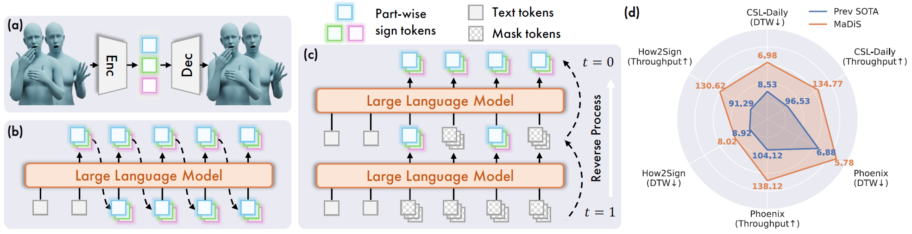
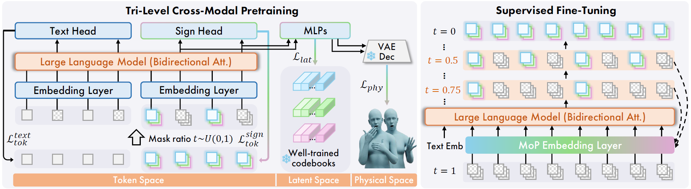
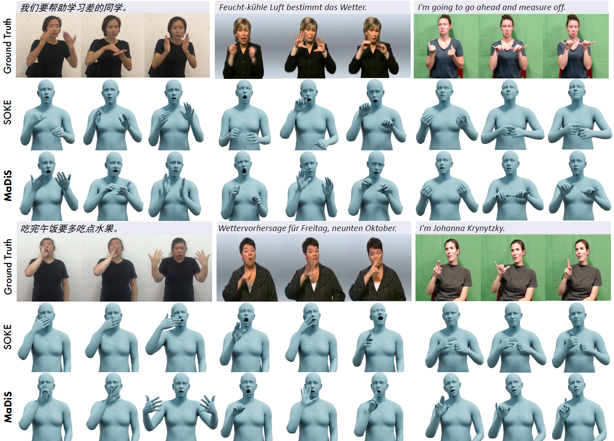

MaDiS: Taming Masked Diffusion Language Models for Sign Language Generation
- Ronglai Zuo
- Rolandos Alexandros Potamias
- Qi Sun
- Evangelos Ververas
- Jiankang Deng
- Stefanos Zafeiriou
- Imperial College London

We propose MaDiS, a novel sign language generation approach built upon masked diffusion language models (MDLMs). (a) A sign tokenizer discretizes continuous sign motions into part-wise tokens. (b) Conventional autoregressive language models generate tokens in a left-to-right manner, limiting utilization of contexts and inference efficiency. (c) The emerging MDLMs model token distributions with bidirectional contexts and enable parallel multi-token sampling during inference. (d) MaDiS achieves SOTA performance across multiple benchmarks while delivering a 40% higher throughput.
Abstract
Sign language generation (SLG) aims to translate written texts into expressive sign motions, bridging communication barriers for the Deaf and Hard-of-Hearing communities. Recent studies formulate SLG within the language modeling framework using autoregressive language models, which suffer from unidirectional context modeling and slow token-by-token inference. To address these limitations, we present MaDiS, a masked-diffusion-based language model for SLG that captures bidirectional dependencies and supports efficient parallel multi-token generation. We further introduce a tri-level cross-modal pretraining scheme that jointly learns from token-, latent-, and 3D physical-space objectives to leverage complementary, multi-level sign representations. To accelerate model convergence in the fine-tuning stage, we design a novel unmasking strategy with temporal checkpoints, which restructures generation in a coarse-to-fine manner and reduces the combinatorial complexity of unmasking orders by over $10^{41}$ times. In addition, a mixture-of-parts embedding layer is developed to effectively fuse information stored in different part-wise sign tokens through a learnable gate and well-optimized codebooks. Extensive experiments on CSL-Daily, Phoenix-2014T, and How2Sign demonstrate that MaDiS achieves superior performance across multiple metrics, including DTW error and two newly introduced metrics, SiBLEU and SiCLIP, while delivering a 40% higher throughput.
Method Overview

MaDiS is built upon the emerging masked diffusion language model (MDLM), implemented by modifying a standard decoder-only LLM with bidirectional attention. The MDLM is first pretrained with three objectives from the token, latent, and 3D physical spaces, respectively. We then fine-tune the model conditioned on text inputs using the proposed temporal-checkpoint unmasking strategy and a dedicated mixture-of- parts sign embedding layer.
Qualitative Evaluation

Qualitative comparisons of generated signs between our proposed method, MaDiS, with the SOTA method, SOKE, on the test sets of CSL-Daily (left), Phoenix-2014T (middle), and How2Sign (right).
Video Demos
Acknowledgements
S. Zafeiriou and part of the research was funded by the EPSRC Fellowship DEFORM (EP/S010203/1), EPSRC Project GNOMON (EP/X011364/1) and Turing AI Fellowship (EP/Z534699/1). R.A. Potamias and R. Zuo were supported by EPSRC Project GNOMON (EP/X011364/1). J. Deng was supported by the NVIDIA Academic Grant. We would also like to thank Yuecong Min for coordinating the user study, and the anonymous signers who participated in it.
The authors acknowledge the use of resources provided by the Isambard-AI National AI Research Resource (AIRR). Isambard-AI is operated by the University of Bristol and is funded by the UK Government’s Department for Science, Innovation and Technology (DSIT) via UK Research and Innovation; and the Science and Technology Facilities Council [ST/AIRR/I-A-I/1023].
Citation
@article{zuo2026madis,
title={MaDiS: Taming Masked Diffusion Language Models for Sign Language Generation},
author={Zuo, Ronglai and Potamias, Rolandos Alexandros and Sun, Qi and Ververas, Evangelos and Deng, Jiankang and Zafeiriou, Stefanos},
journal={arXiv preprint arXiv:2601.19577},
year={2026}
}
Feel free to contact Ronglai Zuo if you have any questions. The website template is adapted from AniPortraitGAN.